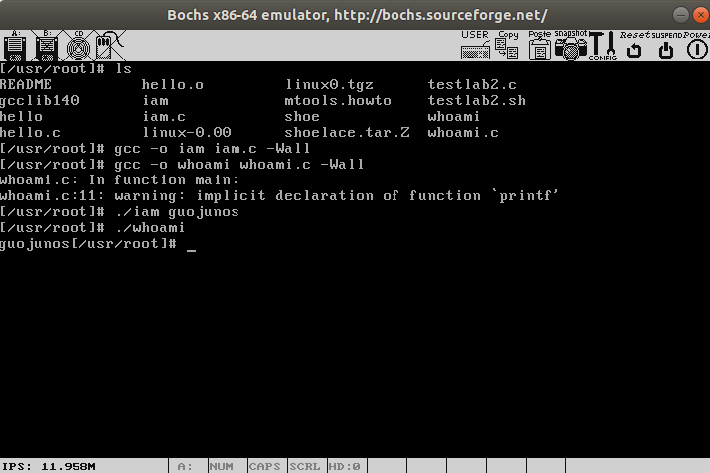
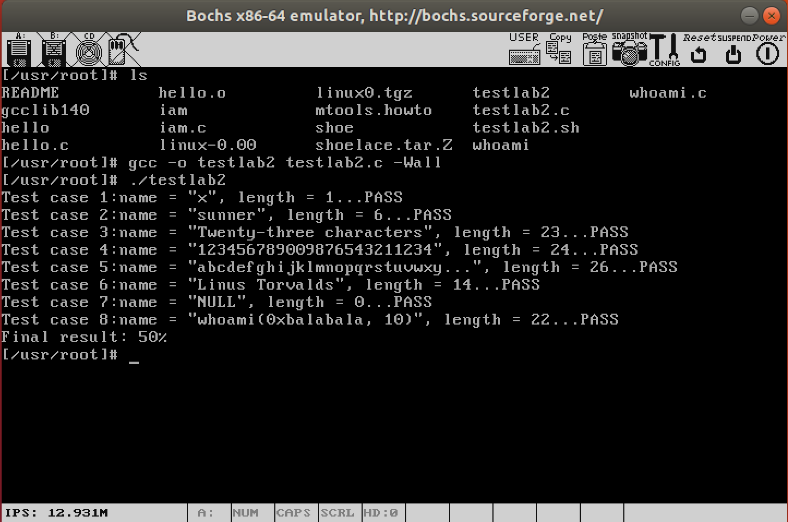
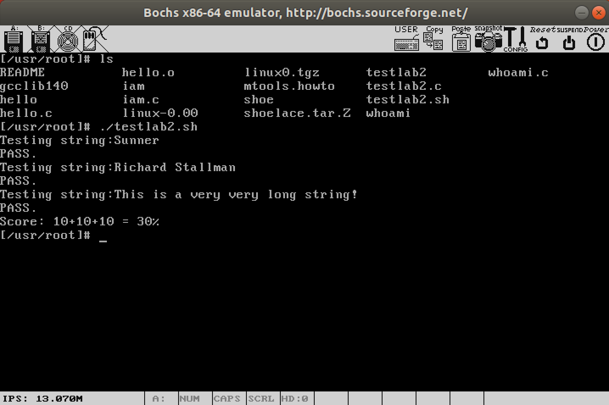

4. 系统调用¶
4.1. 实验目的¶
建立对系统调用接口的深入认识
掌握系统调用的基本过程
能完成系统调用的全面控制
为后续实验做准备
4.2. 实验内容¶
此次实验的基本内容是：在 Linux 0.11 上添加两个系统调用，并编写两个简单的应用程序测试它们。
4.2.1. iam()¶
第一个系统调用是 iam() ，其原型为：
int iam(const char * name);
完成的功能是将字符串参数 name 的内容拷贝到内核中保存下来。
要求 name 的长度不能超过 23 个字符。返回值是拷贝的字符数。
如果 name 的字符个数超过了 23 ，则返回 -1 ，并置 errno 为 EINVAL 。
在 kernal/who.c 中实现此系统调用。
4.2.2. whoami()¶
第二个系统调用是 whoami() ，其原型为：
int whoami(char* name, unsigned int size);
它将内核中由 iam() 保存的名字拷贝到 name 指向的用户地址空间中，
同时确保不会对 name 越界访存（ name 的大小由 size 说明）。
返回值是拷贝的字符数。如果 size 小于需要的空间，则返回 -1 ，并置 errno 为 EINVAL 。
也是在 kernal/who.c 中实现。
4.2.3. 测试程序¶
运行添加过新系统调用的 Linux 0.11 ，在其环境下编写两个测试程序 iam.c 和 whoami.c 。最终的运行结果是：
./iam guojunos
./whoami
guojunos

图1 执行结果
4.3. 实验报告¶
在实验报告中回答如下问题：
从
Linux 0.11现在的机制看，它的系统调用最多能传递几个参数？你能想出办法来扩大这个限制吗？
用文字简要描述向
Linux 0.11添加一个系统调用foo()的步骤。
4.3.1. 评分标准¶
将
testlab2.c在修改过的Linux 0.11上编译运行，显示的结果即内核程序的得分。满分50%只要至少一个新增的系统调用被成功调用，并且能和用户空间交换参数，可得满分
将脚本
testlab2.sh在修改过的Linux 0.11上运行，显示的结果即应用程序的得分。满分30%实验报告，20%

图2 testlab2.c 运行结果

图3 testlab2.sh 运行结果
4.4. 实验提示¶
首先，请将 Linux 0.11 的源代码恢复到原始状态。
《注释》的 5.5 节详细讲述了 0.11 如何处理系统调用，是非常有价值的参考。
操作系统实现系统调用的基本过程是：
应用程序调用库函数（
API）；API将系统调用号存入EAX，然后通过中断调用使系统进入内核态；内核中的中断处理函数根据系统调用号，调用对应的内核函数（系统调用）；
系统调用完成相应功能，将返回值存入
EAX，返回到中断处理函数；中断处理函数返回到
API中；API将EAX返回给应用程序。
4.4.1. 应用程序如何调用系统调用¶
在通常情况下，调用系统调用和调用一个普通的自定义函数在代码上并没有什么区别，
但调用后发生的事情有很大不同。
调用自定义函数是通过 call 指令直接跳转到该函数的地址，继续运行。
而调用系统调用，是调用系统库中为该系统调用编写的一个接口函数，
叫 API （Application Programming Interface）。
API 并不能完成系统调用的真正功能，它要做的是去调用真正的系统调用，过程是：
把系统调用的编号存入
EAX把函数参数存入其它通用寄存器
触发
0x80号中断（int 0x80）
0.11 的 lib 目录下有一些已经实现的 API 。
Linus编写它们的原因是在内核加载完毕后，会切换到用户模式下，做一些初始化工作，然后启动 shell 。
而用户模式下的很多工作需要依赖一些系统调用才能完成，因此在内核中实现了这些系统调用的 API 。
我们不妨看看 lib/close.c ，研究一下 close() 的 API ：
#define __LIBRARY__
#include <unistd.h>
_syscall1(int,close,int,fd)
其中 _syscall1 是一个宏，在 include/unistd.h 中定义。将 _syscall1(int,close,int,fd) 进行宏展开，可以得到：
int close(int fd)
{
long __res;
__asm__ volatile ("int $0x80"
: "=a" (__res)
: "0" (__NR_close),"b" ((long)(fd)));
if (__res >= 0)
return (int) __res;
errno = -__res;
return -1;
}
这就是 API 的定义。
它先将宏 __NR_close 存入 EAX ，将参数 fd 存入 EBX ，然后进行 0x80 中断调用。
调用返回后，从 EAX 取出返回值，存入 __res ，再通过对 __res 的判断决定传给API的调用者什么样的返回值。
其中 __NR_close 就是系统调用的编号，在 include/unistd.h 中定义：
#define __NR_close 6
所以添加系统调用时需要修改 include/unistd.h 文件，使其包含 __NR_whoami 和 __NR_iam 。而在应用程序中，要有：
#define __LIBRARY__ /* 有它，_syscall1等才有效。详见unistd.h */
#include <unistd.h> /* 有它，编译器才能获知自定义的系统调用的编号 */
_syscall1(int, iam, const char*, name); /* iam()在用户空间的接口函数 */
_syscall2(int, whoami,char*,name,unsigned int,size); /* whoami()在用户空间的接口函数 */
在 0.11 环境下编译 C 程序，包含的头文件都在 /usr/include 目录下。
该目录下的 unistd.h 是标准头文件（它和 0.11 源码树中的 unistd.h 并不是同一个文件，虽然内容可能相同），
没有 __NR_whoami 和 __NR_iam 两个宏，需要手工加上它们，也可以直接从修改过的 0.11 源码树中拷贝新的 unistd.h 过来。
4.4.2. 从 int 0x80 进入内核函数¶
int 0x80 触发后，接下来就是内核的中断处理了。
先了解一下 0.11 处理 0x80 号中断的过程。
在内核初始化时，主函数（在 init/main.c 中，Linux 实验环境下是 main() ， Windows 下因编译器兼容性问题被换名为 start() ）调用了 sched_init() 初始化函数：
void main(void)
{
// ……
time_init();
sched_init();
buffer_init(buffer_memory_end);
// ……
}
sched_init() 在 kernel/sched.c 中定义为：
void sched_init(void)
{
// ……
set_system_gate(0x80,&system_call);
}
set_system_gate 是个宏，在 include/asm/system.h 中定义为：
#define set_system_gate(n,addr) \
_set_gate(&idt[n],15,3,addr)
_set_gate 的定义是：
#define _set_gate(gate_addr,type,dpl,addr) \
__asm__ ("movw %%dx,%%ax\n\t" \
"movw %0,%%dx\n\t" \
"movl %%eax,%1\n\t" \
"movl %%edx,%2" \
: \
: "i" ((short) (0x8000+(dpl<<13)+(type<<8))), \
"o" (*((char *) (gate_addr))), \
"o" (*(4+(char *) (gate_addr))), \
"d" ((char *) (addr)),"a" (0x00080000))
虽然看起来挺麻烦，但实际上很简单，就是填写 IDT （中断描述符表），
将 system_call 函数地址写到 0x80 对应的中断描述符中，也就是在中断 0x80 发生后，
自动调用函数 system_call 。
具体细节请参考《注释》的第 4 章。
接下来看 system_call 。该函数纯汇编打造，定义在 kernel/system_call.s 中：
# ……
nr_system_calls = 72 #这是系统调用总数。如果增删了系统调用，必须做相应修改
# ……
.globl system_call
.align 2
system_call:
cmpl $nr_system_calls-1,%eax #检查系统调用编号是否在合法范围内
ja bad_sys_call
push %ds
push %es
push %fs
pushl %edx
pushl %ecx
pushl %ebx # push %ebx,%ecx,%edx，是传递给系统调用的参数
movl $0x10,%edx # 让ds,es指向GDT，内核地址空间
mov %dx,%ds
mov %dx,%es
movl $0x17,%edx # 让fs指向LDT，用户地址空间
mov %dx,%fs
call sys_call_table(,%eax,4)
pushl %eax
movl current,%eax
cmpl $0,state(%eax)
jne reschedule
cmpl $0,counter(%eax)
je reschedule
system_call 用 .globl 修饰为其他函数可见。
call sys_call_table(,%eax,4) 之前是一些压栈保护，修改段选择子为内核段，
call sys_call_table(,%eax,4) 之后是看看是否需要重新调度，这些都与本实验没有直接关系，
此处只关心 call sys_call_table(,%eax,4) 这一句。
根据汇编寻址方法它实际上是：
call sys_call_table + 4 * %eax # 其中eax中放的是系统调用号，即__NR_xxxxxx
显然， sys_call_table 一定是一个函数指针数组的起始地址，它定义在 include/linux/sys.h 中：
fn_ptr sys_call_table[] = { sys_setup, sys_exit, sys_fork, sys_read, // ……
增加实验要求的系统调用，需要在这个函数表中增加两个函数引用—— sys_iam 和 sys_whoami 。
当然该函数在 sys_call_table 数组中的位置必须和 __NR_xxxxxx 的值对应上。
同时还要仿照此文件中前面各个系统调用的写法，加上：
extern int sys_whoami();
extern int sys_iam();
不然，编译会出错的。
4.4.3. 实现 sys_iam() 和 sys_whoami()¶
添加系统调用的最后一步，是在内核中实现函数 sys_iam() 和 sys_whoami() 。
每个系统调用都有一个 sys_xxxxxx() 与之对应，它们都是我们学习和模仿的好对象。
比如在 fs/open.c 中的 sys_close(int fd) ：
int sys_close(unsigned int fd)
{
// ……
return (0);
}
它没有什么特别的，都是实实在在地做 close() 该做的事情。所以只要自己创建一个文件： kernel/who.c ，然后实现两个函数就万事大吉了。
4.4.4. 修改 Makefile¶
要想让我们添加的 kernel/who.c 可以和其它Linux代码编译链接到一起，必须要修改 Makefile 文件。
Makefile 里记录的是所有源程序文件的编译、链接规则，《注释》 3.6 节有简略介绍。
我们之所以简单地运行 make 就可以编译整个代码树，是因为 make 完全按照 Makefile 里的指示工作。
Makefile 在代码树中有很多，分别负责不同模块的编译工作。我们要修改的是 kernel/Makefile 。
需要修改两处。一处是：
OBJS = sched.o system_call.o traps.o asm.o fork.o \
panic.o printk.o vsprintf.o sys.o exit.o \
signal.o mktime.o
改为：
OBJS = sched.o system_call.o traps.o asm.o fork.o \
panic.o printk.o vsprintf.o sys.o exit.o \
signal.o mktime.o who.o
另一处：
### Dependencies:
exit.s exit.o: exit.c ../include/errno.h ../include/signal.h \
../include/sys/types.h ../include/sys/wait.h ../include/linux/sched.h \
../include/linux/head.h ../include/linux/fs.h ../include/linux/mm.h \
../include/linux/kernel.h ../include/linux/tty.h ../include/termios.h \
../include/asm/segment.h
改为：
### Dependencies:
who.s who.o: who.c ../include/linux/kernel.h ../include/unistd.h
exit.s exit.o: exit.c ../include/errno.h ../include/signal.h \
../include/sys/types.h ../include/sys/wait.h ../include/linux/sched.h \
../include/linux/head.h ../include/linux/fs.h ../include/linux/mm.h \
../include/linux/kernel.h ../include/linux/tty.h ../include/termios.h \
../include/asm/segment.h
Makefile 修改后，和往常一样 make all 就能自动把 who.c 加入到内核中了。
如果编译时提示 who.c 有错误，就说明修改生效了。
所以，有意或无意地制造一两个错误也不完全是坏事，至少能证明 Makefile 是对的。
4.4.5. 用 printk() 调试内核¶
oslab 实验环境提供了基于 C 语言和汇编语言的两种调试手段。
除此之外，适当地向屏幕输出一些程序运行状态的信息，也是一种很高效、便捷的调试方法，
有时甚至是唯一的方法，被称为 printf 法。
要知道到， printf() 是一个只能在用户模式下执行的函数，而系统调用是在内核模式中运行，
所以 printf() 不可用，要用 printk() 。
它和 printf 的接口和功能基本相同，只是代码上有一点点不同。
printk() 需要特别处理一下 fs 寄存器，它是专用于用户模式的段寄存器。
看一看 printk 的代码（在 kernel/printk.c 中）就知道了：
int printk(const char *fmt, ...)
{
// ……
__asm__("push %%fs\n\t"
"push %%ds\n\t"
"pop %%fs\n\t"
"pushl %0\n\t"
"pushl $buf\n\t"
"pushl $0\n\t"
"call tty_write\n\t"
"addl $8,%%esp\n\t"
"popl %0\n\t"
"pop %%fs"
::"r" (i):"ax","cx","dx");
// ……
}
显然， printk() 首先 push %fs 保存这个指向用户段的寄存器，在最后 pop %fs 将其恢复，
printk 的核心仍然是调用 tty_write() 。
查看 printf() 可以看到，它最终也要落实到这个函数上。
4.4.6. 编写测试程序¶
激动地运行一下由你亲手修改过的 Linux 0.11 pro++ ！然后编写一个简单的应用程序进行测试。
比如在 sys_iam() 中向终端 printk() 一些信息，让应用程序调用 iam() ，从结果可以看出系统调用是否被真的调用到了。
可以直接在Linux 0.11环境下用 vi 编写（别忘了经常执行 sync 以确保内存缓冲区的数据写入磁盘），
也可以在 Ubuntu 下编完后再传到 Linux 0.11 下。无论如何，最终都必须在 Linux 0.11 下编译。编译命令是：
gcc -o iam iam.c -Wall
gcc 的 -Wall 参数是给出所有的编译警告信息， -o 参数指定生成的执行文件名是 iam ，用下面命令运行它：
./iam
如果如愿输出了你的信息，就说明你添加的系统调用生效了。否则，就还要继续调试，祝你好运！
4.4.7. 在用户态和核心态之间传递数据¶
指针参数传递的是应用程序所在地址空间的逻辑地址，在内核中如果直接访问这个地址，访问到的是内核空间中的数据，不会是用户空间的。所以这里还需要一点儿特殊工作，才能在内核中从用户空间得到数据。
要实现的两个系统调用参数中都有字符串指针，
非常象 open(char *filename, ……) ，所以我们看一下 open() 系统调用是如何处理的。
int open(const char * filename, int flag, ...)
{
// ……
__asm__("int $0x80"
:"=a" (res)
:"0" (__NR_open),"b" (filename),"c" (flag),
"d" (va_arg(arg,int)));
// ……
}
可以看出，系统调用是用 eax 、 ebx 、 ecx 、 edx 寄存器来传递参数的。
其中 eax 传递了系统调用号，而 ebx 、 ecx 、 edx 是用来传递函数的参数的，其中 ebx 对应第一个参数， ecx 对应第二个参数，
依此类推。如 open 所传递的文件名指针是由 ebx 传递的，也即进入内核后，通过 ebx 取出文件名字符串。
open 的 ebx 指向的数据在用户空间，而当前执行的是内核空间的代码，
如何在用户态和核心态之间传递数据？接下来我们继续看看 open 的处理：
system_call: # 所有的系统调用都从system_call开始
# ……
pushl %edx
pushl %ecx
pushl %ebx # push %ebx,%ecx,%edx，这是传递给系统调用的参数
movl $0x10,%edx # 让ds,es指向GDT，指向核心地址空间
mov %dx,%ds
mov %dx,%es
movl $0x17,%edx # 让fs指向的是LDT，指向用户地址空间
mov %dx,%fs
call sys_call_table(,%eax,4) # 即call sys_open
由上面的代码可以看出，获取用户地址空间（用户数据段）中的数据依靠的就是段寄存器 fs ，
下面该转到 sys_open 执行了，在 fs/open.c 文件中：
int sys_open(const char * filename, int flag, int mode) //filename这些参数从哪里来？
/*是否记得上面的pushl %edx, pushl %ecx, pushl %ebx？
实际上一个C语言函数调用另一个C语言函数时，编译时就是将要
传递的参数压入栈中（第一个参数最后压，…），然后call …，
所以汇编程序调用C函数时，需要自己编写这些参数压栈的代码…*/
{
// ……
if ((i=open_namei(filename,flag,mode,&inode))<0) {
// ……
}
// ……
}
它将参数传给了 open_namei() 。
再沿着 open_namei() 继续查找，文件名先后又被传给 dir_namei() 、 get_dir() 。
在 get_dir() 中可以看到：
static struct m_inode * get_dir(const char * pathname)
{
// ……
if ((c=get_fs_byte(pathname))=='/') {
// ……
}
// ……
}
处理方法就很显然了：用 get_fs_byte() 获得一个字节的用户空间中的数据。
所以，在实现 iam() 时，调用 get_fs_byte() 即可。
但如何实现 whoami() 呢？即如何实现从核心态拷贝数据到用心态内存空间中呢？
猜一猜，是否有 put_fs_byte() ？有！看一看 include/asm/segment.h ：
extern inline unsigned char get_fs_byte(const char * addr)
{
unsigned register char _v;
__asm__ ("movb %%fs:%1,%0":"=r" (_v):"m" (*addr));
return _v;
}
extern inline void put_fs_byte(char val,char *addr)
{
__asm__ ("movb %0,%%fs:%1"::"r" (val),"m" (*addr));
}
他俩以及所有 put_fs_xxx() 和 get_fs_xxx() 都是用户空间和内核空间之间的桥梁，在后面的实验中还要经常用到。
4.4.8. 运行脚本程序¶
Linux的一大特色是可以编写功能强大的 shell 脚本，提高工作效率。
本实验的部分评分工作由脚本 testlab2.sh 完成。它的功能是测试 iam.c 和 whoami.c 。
首先将 iam.c 和 whoami.c 分别编译成 iam 和 whoami ，然后将 testlab2.sh
拷贝到同一目录下。
用下面命令为此脚本增加执行权限：
chmod +x testlab2.sh
然后运行之：
./testlab2.sh
根据输出，可知 iam.c 和 whoami.c 的得分。
4.4.9. errno¶
errno 是一种传统的错误代码返回机制。当一个函数调用出错时，通常会返回 -1 给调用者。
但 -1 只能说明出错，不能说明错是什么。为解决此问题，全局变量 errno 登场了。
错误值被存放到 errno 中，于是调用者就可以通过判断 errno 来决定如何应对错误了。
各种系统对 errno 的值的含义都有标准定义。
Linux下用 man errno 可以看到这些定义。